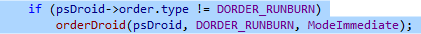
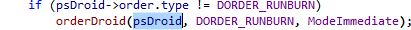
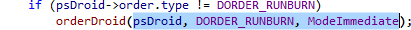

Smart Select
Use Extend Block Selection (Alt+]) to select the current block, typically a construct or compound statement.

Alternatively, use Extend Selection (Shift+Alt+]) to select a small segment, e.g. a condition or parameter.

Successive commands extend a selection in logical increments.

Use the complements, Alt+[ and Shift+Alt+[, to shrink a selection.
Learn more.